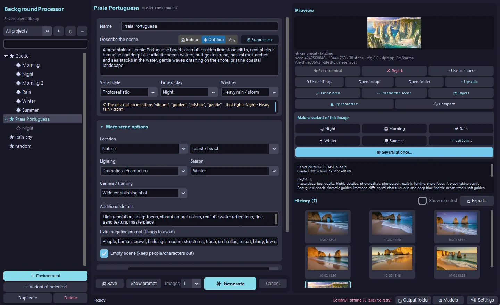
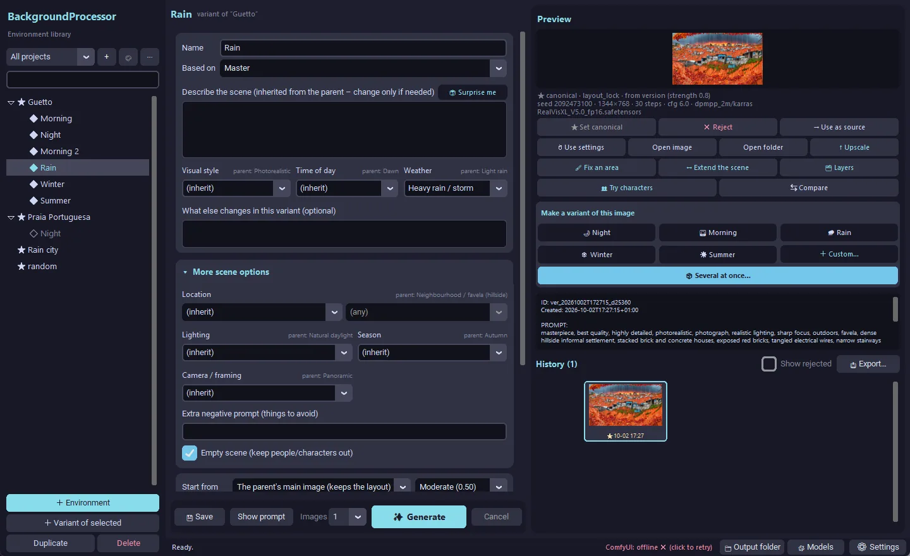
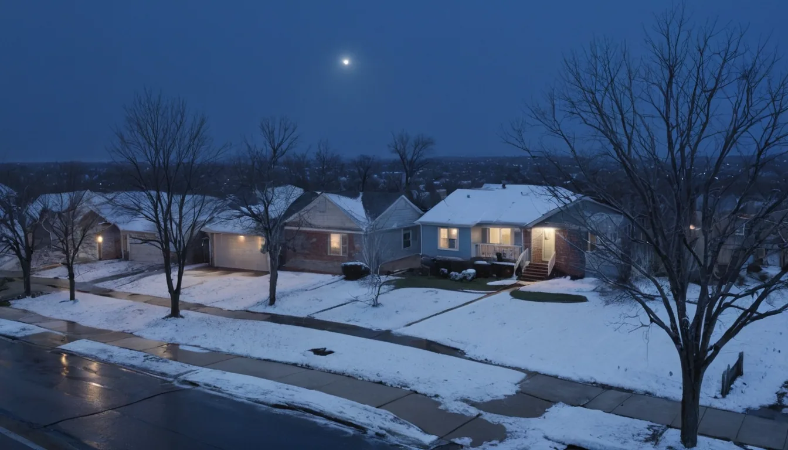

Scene library
Each environment keeps a master image and its variants — morning, night, rain, winter — so a story can return to the same place.
AI CREATIVITY · EXPERIMENT
Consistent backgrounds, one scene at a time.
A companion to Character Creator: a desktop tool that turns a short scene description into environment backgrounds through a local ComfyUI workflow, and keeps every scene and its variants organised in a library.
Each environment keeps a master image and its variants — morning, night, rain, winter — so a story can return to the same place.
Pick style, time of day, weather, location and framing instead of writing long prompts; empty scenes keep characters out.
Upscale, fix an area, extend the scene and compare versions side by side.
Screenshots
The desktop interface and a few backgrounds it generated.



The tool runs locally with ComfyUI and is not available for download.